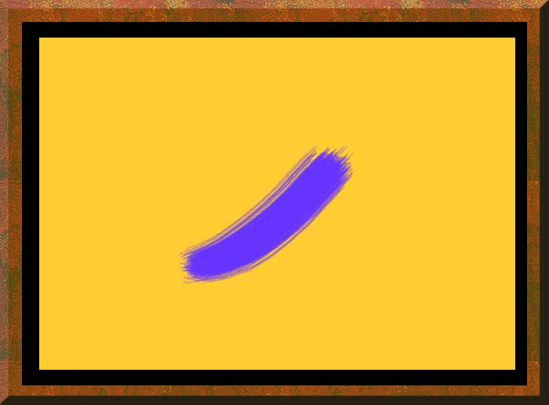

| Brush. Years ago the gallery of a local newspaper included as a work of art a painting that was nothing but the color blue, and yes, titled "Blue." Well, you know, its Hawaii I thought, where modern and abstract artists dominate public art. Then we went to the Smithsonian American Art Museum and found several huge paintings of nothing but one or two colors, with perhaps a stripe or so. Okay, I can do this too, and here is my art. Note to museum curators: I will not sell this cheaply. (This may be described to skeptical museum visitors in this way: note that Rummel has used complementary colors and a rough, hairy brush stroke against a smooth background to show how differences can be unified, and see how the latent tension in the painting is gentled by the balanced location of the stroke--it is really a picture of harmony in diversity and how peace can be achieved through art; if only our politicians would see this painting.) |